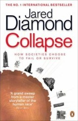

Collapse: How Societies Choose to Fail or Survive

by Jared Diamond
A brilliant tome from the same bloke who penned Guns, Germs and Steel. This time he examines the flip side of the equation - what characteristics cause civilisations to fail? From the statues of Easter Island to the Mayan Ruins, the world is replete with the abandoned relics of cultures that collapsed. Diamond examines seven examples of societies whose members all died or dispersed, sometimes over a period of just a few years, leaving their hauntingly abandoned habitats, looking for the common factors which lead to their demise. The implications for our own culture are serious. Do we have more in common with these failed civilisations, or with the ones that exhibited long-term stability? Will our own skyscrapers one day stand as hauntingly abandoned monuments amongst jungle or desert? It's a serious message, and the immediate conclusion looks a little grim, as our rabid consumerism and resource consumption is anything but steady-state. However, Diamond finds a silver lining, presenting his conclusions as a message of hope. We are the first civilisation to have a global reach, and to have knowledge of ancient societies that have gone before, so while the stakes are higher than ever, so is our ability to forsee the consequences of our actions, and to change our course before it's too late.
Rating: 8/10 - a fascinating and important read.
Comments
Comments powered by Disqus